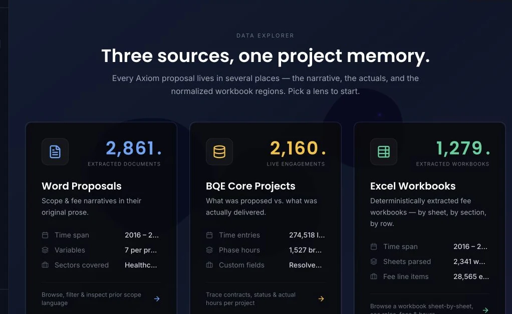

Structural engineering
Make past engineering work useful again.
Tools for exploring proposal history, project fees and hours to inform new estimates.

The source explorer organizes historical proposal documents, engagement records and fee workbooks. Source reconciliation and estimation remain separate work.
The context
A problem worth solving.
Historical proposals contain useful information for estimating new work, but finding and comparing that information can be difficult.
My contribution
What I brought to the work.
Led product development and coordinated subcontractors on tools for searching past proposals and exploring fees and hours. The role includes product direction and delivery coordination rather than a claim of sole implementation.
The product
What it makes possible.
01Proposal research+
Search and investigate earlier proposal information to understand comparable work.
02Estimating context+
Explore project fees and hours to inform estimates for new projects.
03Executive briefing+
Built a separate executive-briefing prototype. It was not launched.
At a glance / simplified product view
- 01Proposal history
- 02Search & explore
- 03Estimating context
Where it stands
The work keeps moving.
Build on the research and estimating workflows as business requirements become clearer. The executive-briefing prototype remains distinct from launched work.